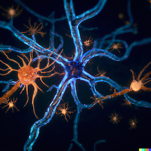

2023
Half-Hop: A graph upsampling approach for slowing down message passing
Accepted at ICML 2023
2023

Transcriptomic cell type structures in vivo neuronal activity across multiple time scales
+Contributed equally as co-first authors
Cell Reports, Volume 42, Issue 4, April 2023.
Cite this paper
@article{SCHNEIDER2023112318,
title = {Transcriptomic cell type structures in vivo neuronal activity across multiple timescales},
journal = {Cell Reports},
volume = {42},
number = {4},
pages = {112318},
year = {2023},
issn = {2211-1247},
doi = {https://doi.org/10.1016/j.celrep.2023.112318},
url = {https://www.sciencedirect.com/science/article/pii/S2211124723003297},
author = {Aidan Schneider and Mehdi Azabou and Louis McDougall-Vigier and David F. Parks and Sahara Ensley and Kiran Bhaskaran-Nair and Tomasz Nowakowski and Eva L. Dyer and Keith B. Hengen},
}
Schneider, A., Azabou, M., McDougall-Vigier, L., Parks, D. B., Ensley, S., Bhaskaran-Nair, K., Nowakowski, T., Dyer, E. L. & Hengen, K. B. (2023). Transcriptomic cell type structures in vivo neuronal activity across multiple time scales. Cell Reports, Volume 42, Issue 4, 2023
Relax, it doesn't matter how you get there: A new self-supervised approach for multi-timescale behavior analysis
Preprint, Mar 2023
Cite this paper
@misc{azabou2023relax,
doi = {10.48550/ARXIV.2303.08811},
url = {https://arxiv.org/abs/2303.08811},
author = {Azabou, Mehdi and Mendelson, Michael and Ahad, Nauman and Sorokin, Maks and Thakoor, Shantanu and Urzay, Carolina and Dyer, Eva L.},
title = {Relax, it doesn't matter how you get there: A new self-supervised approach for multi-timescale behavior analysis},
publisher = {arXiv},
year = {2023}
}Mendelson, M., Azabou, M., Jacob, S., Grissom, N., Darrow, D., Ebitz, B., Herman, A. & Dyer, E. L. (2023). Learning signatures of decision making from many individuals playing the same game. arXiv.
Cite this paper
@misc{mendelson2023,
doi = {10.48550/ARXIV.2302.11023},
url = {https://arxiv.org/abs/2302.11023},
author = {Mendelson, Michael J and Azabou, Mehdi and Jacob, Suma and Grissom, Nicola and Darrow, David and Ebitz, Becket and Herman, Alexander and Dyer, Eva L.},
title = {Learning signatures of decision making from many individuals playing the same game},
publisher = {arXiv},
year = {2023},
}Mendelson, M., Azabou, M., Jacob, S., Grissom, N., Darrow, D., Ebitz, B., Herman, A. & Dyer, E. L. (2023). Learning signatures of decision making from many individuals playing the same game. arXiv.
Detecting change points in neural population activity with contrastive metric learning
To appear at the 11th International IEEE EMBS Conference on Neural Engineering (NER'23), Baltimore, Maryland, April 2023
2022
Seeing the forest and the tree: Building representations of both individual and collective dynamics with transformers
Neural Information Processing Systems (NeurIPS), 2022
Cite this paper
@misc{https://doi.org/10.48550/arxiv.2206.06131,
doi = {10.48550/ARXIV.2206.06131},
url = {https://arxiv.org/abs/2206.06131},
author = {Liu, Ran and Azabou, Mehdi and Dabagia, Max and Xiao, Jingyun and Dyer, Eva L.},
keywords = {Neurons and Cognition (q-bio.NC), Machine Learning (cs.LG), FOS: Biological sciences, FOS: Biological sciences, FOS: Computer and information sciences, FOS: Computer and information sciences},
title = {Seeing the forest and the tree: Building representations of both individual and collective dynamics with transformers},
publisher = {arXiv},
year = {2022},
copyright = {Creative Commons Attribution 4.0 International}
}Liu, R., Azabou, M., Dabagia, M., Xiao, J., & Dyer, E. L. (2022). Seeing the forest and the tree: Building representations of both individual and collective dynamics with transformers. arXiv preprint arXiv:2206.06131.
Cite this paper
@inproceedings{
thakoor2022largescale,
title={Large-Scale Representation Learning on Graphs via Bootstrapping},
author={Shantanu Thakoor and Corentin Tallec and Mohammad Gheshlaghi Azar and Mehdi Azabou and Eva L Dyer and Remi Munos and Petar Veli{\v{c}}kovi{\'c} and Michal Valko},
booktitle={International Conference on Learning Representations},
year={2022},
url={https://openreview.net/forum?id=0UXT6PpRpW}
}Thakoor, S., Tallec, C., Azar, M. G., Azabou, M., Dyer, E. L., Munos, R., Veli{\v{c}}kovi{\'c}, P., & Valko, M. (2021). Large-scale representation learning on graphs via bootstrapping. International Conference on Learning Representations.
MTNeuro: A Benchmark for Evaluating Representations of Brain Structure Across Multiple Levels of Abstraction
Neural Information Processing Systems (NeurIPS) Datasets and Benchmarks Track, 2022
Cite this paper
@article{quesadamtneuro,
title={MTNeuro: A Benchmark for Evaluating Representations of Brain Structure Across Multiple Levels of Abstraction},
author={Quesada, Jorge and Sathidevi, Lakshmi and Liu, Ran and Ahad, Nauman and Jackson, Joy M and Azabou, Mehdi and Xiao, Jingyun and Liding, Chris and Urzay, Carolina and Gray-Roncal, William and Johnson, Erik Christopher, Dyer, Eva L.}
}Quesada, J., Sathidevi, L., Liu, R., Ahad, N., Jackson, J. M., Azabou, M., Xiao, J. and Liding, C. and Urzay, C. and Gray-Roncal, W. and Johnson, E. C. & Dyer, E. L. MTNeuro: A Benchmark for Evaluating Representations of Brain Structure Across Multiple Levels of Abstraction.

Cite this paper
@article{azabou2022learning,
title={Learning Behavior Representations Through Multi-Timescale Bootstrapping},
author={Azabou, Mehdi and Mendelson, Michael and Sorokin, Maks and Thakoor, Shantanu and Ahad, Nauman and Urzay, Carolina and Dyer, Eva L},
journal={arXiv preprint arXiv:2206.07041},
year={2022}
}Azabou, M., Mendelson, M., Sorokin, M., Thakoor, S., Ahad, N., Urzay, C., & Dyer, E. L. (2022). Learning Behavior Representations Through Multi-Timescale Bootstrapping. arXiv preprint arXiv:2206.07041.2021
Drop, Swap, and Generate: A Self-Supervised Approach for Generating Neural Activity
Neural Information Processing Systems (NeurIPS), accepted for Oral (1% submissions), 2021

Cite this paper
@inproceedings{NEURIPS2021_58182b82,
author = {Liu, Ran and Azabou, Mehdi and Dabagia, Max and Lin, Chi-Heng and Gheshlaghi Azar, Mohammad and Hengen, Keith and Valko, Michal and Dyer, Eva},
booktitle = {Advances in Neural Information Processing Systems},
editor = {M. Ranzato and A. Beygelzimer and Y. Dauphin and P.S. Liang and J. Wortman Vaughan},
pages = {10587--10599},
publisher = {Curran Associates, Inc.},
title = {Drop, Swap, and Generate: A Self-Supervised Approach for Generating Neural Activity},
url = {https://proceedings.neurips.cc/paper/2021/file/58182b82110146887c02dbd78719e3d5-Paper.pdf},
volume = {34},
year = {2021}
}Liu, R., Azabou, M., Dabagia, M., Lin, C. H., Gheshlaghi Azar, M., Hengen, K., Valko, M. & Dyer, E. (2021). Drop, swap, and generate: A self-supervised approach for generating neural activity. Advances in Neural Information Processing Systems, 34, 10587-10599.

Cite this paper
@article{azabou2021mine,
title={Mine your own view: Self-supervised learning through across-sample prediction},
author={Azabou, Mehdi and Azar, Mohammad Gheshlaghi and Liu, Ran and Lin, Chi-Heng and Johnson, Erik C and Bhaskaran-Nair, Kiran and Dabagia, Max and Avila-Pires, Bernardo and Kitchell, Lindsey and Hengen, Keith B and Gray-Roncal, William and Valko, Michal and Dyer, Eva L},
journal={arXiv preprint arXiv:2102.10106},
year={2021}
}Azabou, M., Azar, M. G., Liu, R., Lin, C. H., Johnson, E. C., Bhaskaran-Nair, K., Dabagia, M., Avila-Pires, B., Kitchell, L., Hengen, K. B., Gray-Roncal, W., Valko, M. & Dyer, E. L. (2021). Mine your own view: Self-supervised learning through across-sample prediction. arXiv preprint arXiv:2102.10106.
Cite this paper
@article{azabouusing,
title={Using self-supervision and augmentations to build insights into neural coding},
author={Azabou, Mehdi and Dabagia, Max and Liu, Ran and Lin, Chi-Heng and Hengen, Keith B and Dyer, Eva L},
journal={NeurIPS 2021 Workshop on Self-supervised Learning: Theory and Practice},
year = {2021}
}Azabou, M., Dabagia, M., Liu, R., Lin, C. H., Hengen, K. B. & Dyer, E. L. Using self-supervision and augmentations to build insights into neural coding.
Making transport more robust and interpretable by moving data through a small number of anchor points
International Conference on Machine Learning (ICML), 2021
Cite this paper
@InProceedings{lin2021,
title = {Making transport more robust and interpretable by moving data through a small number of anchor points},
author = {Lin, Chi-Heng and Azabou, Mehdi and Dyer, Eva},
booktitle = {Proceedings of the 38th International Conference on Machine Learning},
pages = {6631--6641},
year = {2021},
editor = {Meila, Marina and Zhang, Tong},
volume = {139},
series = {Proceedings of Machine Learning Research},
month = {18--24 Jul},
publisher = {PMLR},
}Lin, C., Azabou, M. & Dyer, E.. (2021). Making transport more robust and interpretable by moving data through a small number of anchor points. Proceedings of the 38th International Conference on Machine Learning, in Proceedings of Machine Learning Research 139:6631-6641 Available from https://proceedings.mlr.press/v139/lin21a.html.Abstracts
Detecting change points in neural population activity with contrastive metric learning
Conference on Cognitive Computational Neuroscience (CCN), 2022
Cite this paper
@misc{Urzay_Ahad_Azabou_Schneider_Atmakuri_Hengen_Dyer_2022,
title={Detecting change points in neural population activity with contrastive metric learning},
url={http://dx.doi.org/10.32470/CCN.2022.1261-0},
DOI={10.32470/ccn.2022.1261-0},
journal={2022 Conference on Cognitive Computational Neuroscience},
publisher={Cognitive Computational Neuroscience},
author={Urzay, Carolina and Ahad, Nauman and Azabou, Mehdi and Schneider, Aidan and Atmakuri, Geethika and Hengen, Keith B. and Dyer, Eva L.},
year={2022}
}Urzay, C., Ahad, N., Azabou, M., Schneider, A., Atmakuri, G., Hengen, K. B., & Dyer, E. L. (2022). Detecting change points in neural population activity with contrastive metric learning. In 2022 Conference on Cognitive Computational Neuroscience. https://doi.org/10.32470/ccn.2022.1261-0